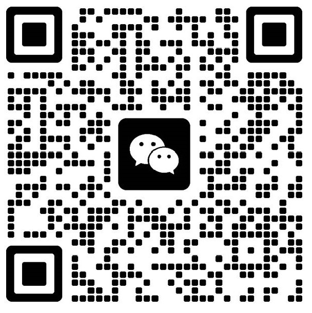
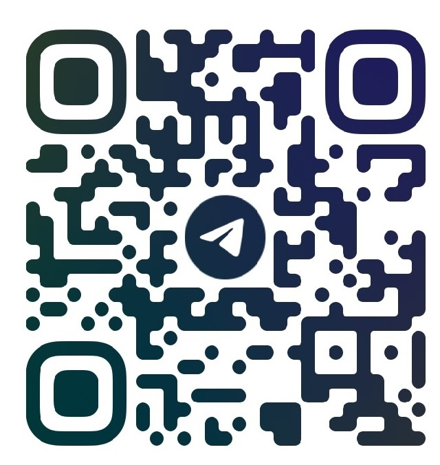

八字是指一个人的出生年、月、日、时所构成的四柱，也称为命盘。通过对八字的分析，可以推测一个人的性格、运势、事业等方面的走向。
相术通常指面相学，是通过观察人的面容、五官、线条等来推测个人的性格、命运和运势。
奇门遁甲是一种古老的占卜和预测术，通过对时间和方位的研究，以达到预测未来、选择吉时、化解厄运的目的。
风水是一种古老的中国传统艺术，研究环境与人的关系。通过调整和布置环境，以获得吉祥、和谐和幸福。
①四柱命理：200元RMB 单项 例：感情
②四柱命理：500元RMB 全盘 健康财运感情婚姻子女等
③风水调理：10平100元起 例：80平 8*100=800RMB
④奇门测事：200元RMB
⑤取名改名：500元RMB，详细二维码咨询
⑥手相面相：60元RMB 单项 例：感情
⑦命理课程：初始500元入学金，详细二维码咨询
*境外可以用PayPal收款
添加备注：kinbook，注明来意。
 